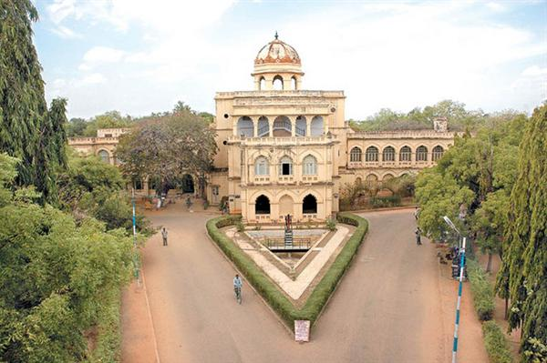
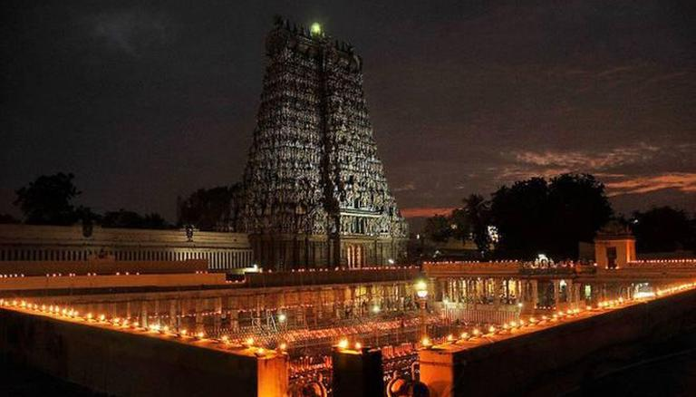
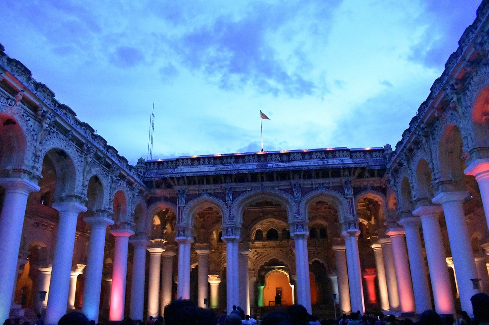
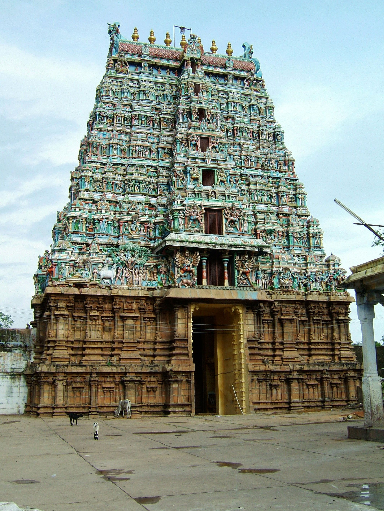
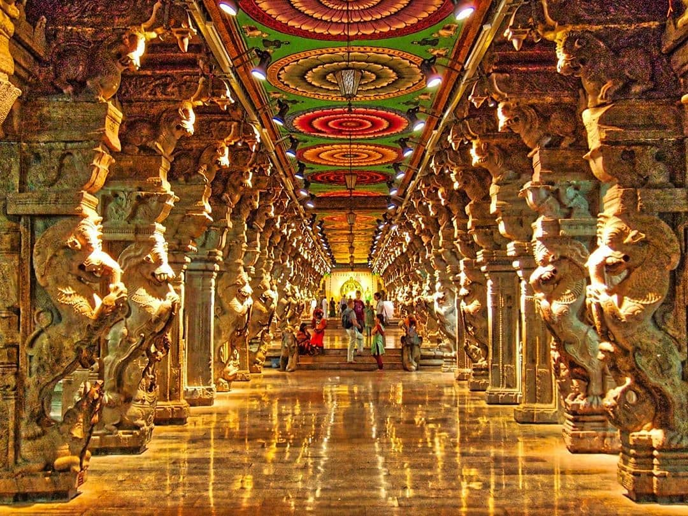
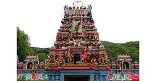
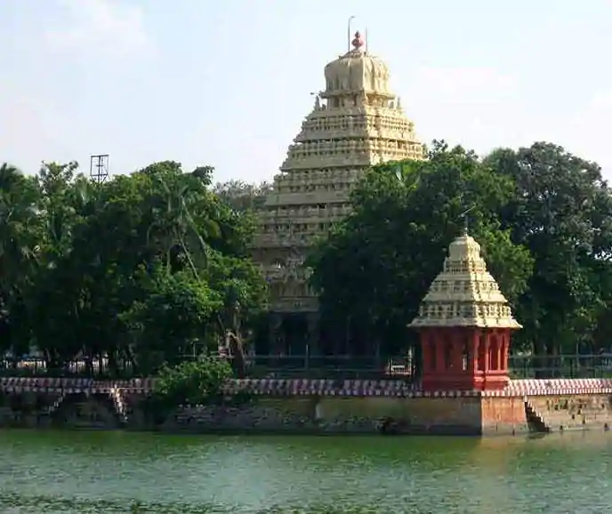

1.YANAMALAI HILLS
Things to admire: Yanaimalai is one of the most beautiful places to visit in Madurai, besides being a well-preserved tourist attraction. Home to several ancient sculptures, a Shaivite Temple and a couple of caves, the hill is spans over 3 km of lush green land, and is about 300 ft. high.
The structural beauty and historical significance of the hill has earned it a the title of a protected monument under The Ancient And Archaeological Sites And Remains Act. Rooted in various mythological tales and folklore, Yanaimalai is an unmissable place for history enthusiasts and nature lovers alike.
Recommended Hours 30mins to one hour
Timing Planned: Start at 9:30 AM till 10:30AM

2.GANDHI MEMORIAL MUSEUM
Things to admire: At Gandhi Memorial Museum, explore one of the five museums in India dedicated to Gandhi, located in the impressive Tamukkam Palace. The memorial museum was established in 1959, after an appeal by the citizens of India, who wanted to see memorials built in Gandhi’s honor. Wander through the historic palace, and discover the blood-stained clothes worn by Gandhi when he was assassinated in 1948. You’ll also find many letters of interest on display, as well as collections relating to India's fight for freedom, Gandhi's life story, and the nation's political history.
Recommended Hours 1 HR 30mins to 2 HR
Timing Planned: Start at 11:00 AM till 1:00 PM

3.MEENAKSHI AMMAN TEMPLE
Things to admire: Visit the vast complex of Madurai Meenakshi Amman Temple, a marvel of South Indian architecture sprawled over 6 ha (15 ac). Dedicated to Meenakshi, an avatar of Parvati and a warrior goddess, the current 27-temple complex dates back to the 17th century. Approach the temple through the surrounding pedestrian-only streets, admire its towering pillars, and visit the sacred “golden lotus” pond. Although the main shrine is only open to Hindus, you can explore the rest of the temple premises. Remember to dress modestly as the staff enforce strict wardrobe rules.
Recommended Hours 4 to 5HRS
Timing Planned: Start at 1:30 PM till 6:00 PM

4.THIRUMALAI NAYAKAR MAHAL
Things to admire:A majestic 17th-century palace, Thirumalai Nayakar Mahal represents one of India's architectural wonders, built as a royal residence. Although much of the palace was destroyed by various armed conflicts in the area and only about a quarter of the original structure remains, you can still admire the enclosed court with its monumental pillars--a classic blend of Rajput and Dravidian building styles.,
Recommended Hours 1 HR
Timing Planned: Start at 10:00AM till 11:00AM

5.KOODAL AZHAGAR TEMPLE
Things to admire:Adorning the old part of the city with its specific, Dravidian architectural style, Koodal Azhagar Temple is a famous religious site dedicated to the Vishnu deity. The temple is divided into three parts, on three floors, which house three Vishnu idols in different positions. So on each one you can see the sitting, standing, and sleeping Vishnu’s huge idols. Pay attention to the decorations and carvings on both the walls and doors, as well as the idols themselves, and enjoy the lively atmosphere of the site.
Recommended Hours 1 HR
Timing Planned: Start at 11:30AM till 12:30PM

6.AYIRAM KAAL MANDAPAM
Things to admire:Run a gauntlet between countless giant stone pillars and marvel at their elaborately carvings at Aayiram Kaal Mandapam, a great hall belonging to the Meenakshi Amman Temple complex. With a total of 985 columns, this great hallway earned the title of the Hall of One Thousand Pillars. Built in 1579, this mandapa, or pillared outdoor hall, features exquisite columns with images of fantastic creatures, deities and demons from rich Indo-Chinese tradition, with each pillar displaying a unique unrepeated carving. Play some of the musical pillars and listen to some Carnatic music when you tap or hit them.
Recommended Hours 1 HR
Timing Planned: Start at 1PM till 2PM

7.PAZHAMUDHIR SOLAI
Things to admire:Head atop a dense tree-covered hill and visit Pazhamudhir Solai, one of the six important abodes of Lord Muruga, god of love and war. A myriad of vibrantly colored figures adorn the Dravidian temple's facade. Though the construction date remains unknown, sources can confirm that this is the last among the Arupadaiveedu temples (each a home of Muruga). Walk around the temple and see monkeys playing around in the local area, which includes a sacred stream.
Recommended Hours 1 HR
Timing Planned: Start at 3:00PM till 4:00PM

8.THEPAKULAM
Things to admire:Head atop a dense tree-covered hill and visit Pazhamudhir Solai, one of the six important abodes of Lord Muruga, god of love and war. A myriad of vibrantly colored figures adorn the Dravidian temple's facade. Though the construction date remains unknown, sources can confirm that this is the last among the Arupadaiveedu temples (each a home of Muruga). Walk around the temple and see monkeys playing around in the local area, which includes a sacred stream.
Recommended Hours 1 HR
Timing Planned: Start at 4:30PM till 5:30PM